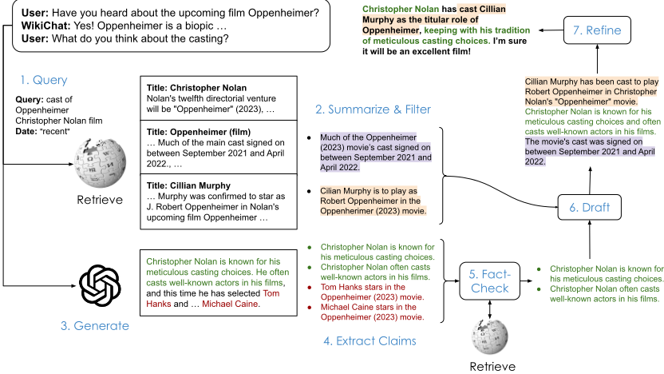
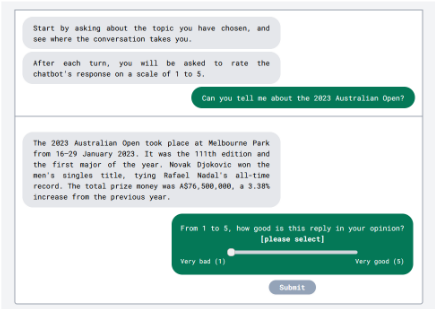
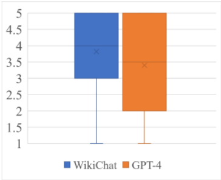
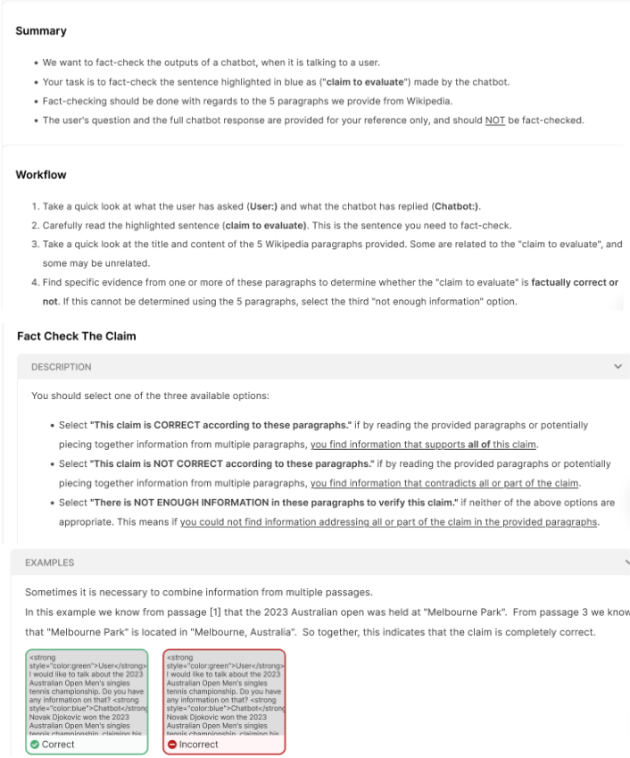
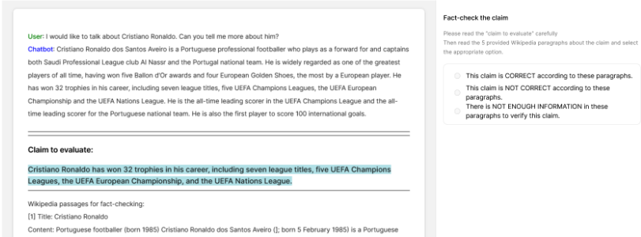

WikiChat：通过基于 Wikipedia 的少样本接地（few-shot grounding）遏制 LLM 聊天机器人的幻觉
LLM 聊天机器人在知识密集型对话中容易产生幻觉，尤其在 pre-training 截止后的 recent 知识和低频 tail 知识上，而已有 retrieve-then-generate 方案要么输出干瘪不自然、要么仍会幻觉，且许多提升事实性的方法延迟过高。WikiChat 提出一个 7 阶段 few-shot 管线：先生成带时间标注的检索 query 从 Wikipedia 检索并摘要过滤为要点；再让 LLM 生成回复并拆解为自包含 claims，逐条用检索证据做 chain-of-thought 事实核查，只保留被支持的 claims；最后起草并按相关性、自然度、非重复性、时间正确性精炼回复，无据可依时明确说 'I don't know'。GPT-4 版本在模拟对话中事实准确率达 97.3%，在 head/tail/recent 知识上比 GPT-4 分别高 3.9%/38.6%/51.0%；真实用户研究中 recent 话题准确率 97.9%，比 GPT-4 高 55.0% 且用户评分更高。整个管线被多任务蒸馏进 7B LLaMA，准确率 91.1%、端到端延迟降低 3.2 倍，兼顾成本与隐私。
LLM 聊天机器人在知识密集型对话中容易以自信口吻给出误导性信息（幻觉），对 pre-training 之后发生的 recent 事件和低频 tail 话题尤其不可靠；已有 retrieve-then-generate 聊天机器人仍可能幻觉（如 Bing Chat 仅 58.7% 的 facts 有检索依据），而先生成后事实核查的方案内容贫乏、延迟高。论文聚焦知识密集对话的三个指标：factuality、conversationality 和 latency。
提出 7 阶段 few-shot 管线（全部用 in-context learning 实现）：(1) 根据用户话语生成带时间标注（recent/year=yyyy/none）的检索 query，检索后按时间信息重排；(2) 将检索段落摘要过滤为要点 bullet points；(3) 让 LLM 生成回复；(4) 将回复拆解为自包含 claims（消解共指与相对时间），为每条 claim 检索证据段落；(5) 用 chain-of-thought 提示逐条核查为 SUPPORTS/REFUTES/NOT ENOUGH INFO，只保留被证据支持的 claims；(6) 用要点与对话历史起草回复；(7) 按 relevance/naturalness/non-repetitiveness/temporal correctness 四项打分并据此精炼。语料中无相关信息时跳过起草、回复 'Sorry, I'm not sure'。最后将 WikiChat G4 的 7 个子任务多任务蒸馏进 7B LLaMA（去除 CoT、合并阶段 6-7），降低延迟、成本并支持本地部署保护隐私。
WikiChat G4 在模拟对话中事实准确率 97.3%（head 98.8%、tail 94.6%、recent 98.5%），比 GPT-4 在 head/tail/recent 知识上分别高 3.9%、38.6%、51.0%
三个版本 WikiChat 相比各自基座 LLM 平均提升事实准确率 31.2%（GPT-4）、27.8%（GPT-3.5）、50.2%（LLaMA），并平均超过微调 SOTA 检索模型 Atlas 的事实性，同时保持 LLM 级 conversationality
真实用户研究（40 人、recent 话题）：WikiChat G4 事实准确率 97.9%，比 GPT-4 高 55.0%，用户评分 3.8 vs 3.4（p≤0.05 统计显著），未发现一例有效的幻觉投诉
蒸馏后的 WikiChat L（7B LLaMA）事实准确率 91.1%，每 claim 延迟比教师模型低 3.2 倍、与 GPT-4 相当；通过合并阶段 6-7、去除 CoT、TGI+FlashAttention 等优化，将朴素实现的约 15 秒/claim 延迟降低 6.5 倍
约三分之一的 LLM 生成 claims 未通过事实核查被剔除，WikiChat L 在 tail/recent 子集的拒绝率高达 54.0%/64.4%；最终回复中 24.5%-32.2% 的 claims 来自经核查的 LLM 生成内容，其余来自 IR
与 retrieve-then-generate 不同，WikiChat 同时利用 LLM 生成能力与 IR：对 LLM 输出逐 claim 事实核查、只保留被证据支持的事实，并系统性处理时间上下文（query 时间标注、时间重排、时间正确性精炼、过去/未来时态理解）；首次证明可将基于 in-context learning 的多阶段系统蒸馏进单一小模型（多任务、去 CoT 后指标不掉）；并提出 human-and-LLM 混合评测方法，用 head/tail/recent 分层话题覆盖静态众包基准（如 Wizard of Wikipedia）无法评估的 LLM 盲区。
相关度级别：high
命中能力域：3.1 上下文工程与记忆 | 3.2 提示工程 | 3.3 Agent 架构与工具使用 | 3.5 评测与可靠使用
理由：论文直接命中团队多个核心能力域：7 阶段管线是典型的 RAG/检索增强与结构化上下文组织实践（检索段落摘要过滤为要点、claims 与证据的逐条组织、对话历史截取最近 5 轮防混淆）；所有阶段用 few-shot 提示与 chain-of-thought 实现，附录 F 公开了全部 Jinja2 模板提示，是提示设计与资产复用的直接参考；管线包含检索时机判断、query 生成等工具调用决策，以及 'I don't know' 兜底、逐 claim 核查等单系统执行可靠性设计；human-and-LLM 混合评测、LLM 模拟用户、head/tail/recent 话题分层、逐 claim 人工核查，以及通过蒸馏优化延迟/成本/隐私，均属评测与可靠使用范畴。对团队构建知识库问答、文档类应用的幻觉治理与评测体系有直接落地价值。
建议动作：深入精读并做内部分享
arXiv:2305.14292v2 [cs.CL] 2023年10月27日
WikiChat：通过基于维基百科的少样本接地阻止大语言模型聊天机器人的幻觉
Sina J. Semnani Violet Z. Yao ∗ Heidi C. Zhang ∗ Monica S. Lam
斯坦福大学计算机科学系 美国加利福尼亚州斯坦福
{sinaj, vyao, chenyuz, lam}@cs.stanford.edu
本文提出了首个几乎从不产生幻觉、同时具备高对话性和低延迟的少样本大语言模型（LLM）聊天机器人。WikiChat 以英文维基百科——这一规模最大的经人工整理的自由文本语料库——为接地基础。
WikiChat 从 LLM 生成回复，仅保留已接地的事实，并将其与从语料库中检索到的额外信息相结合，从而形成事实准确且引人入胜的回复。我们将基于 GPT-4 的 WikiChat 蒸馏为 7B 参数的 LLaMA 模型，质量损失极小，从而显著改善其延迟、成本和隐私，并促进研究与部署 1 。
采用一种新颖的人类与 LLM 混合评估方法，我们展示了我们最佳的系统在模拟对话中达到 97.3% 的事实准确率。它显著优于所有基于检索和基于 LLM 的基线，并且在头部、尾部和最新知识方面分别比 GPT-4 高出 3.9%、38.6% 和 51.0%。与之前最先进的基于检索的聊天机器人相比，WikiChat 也像 LLM 一样具有显著更强的信息量和吸引力。
WikiChat 在与人类用户就最新话题进行的对话中达到 97.9% 的事实准确率，比 GPT-4 高出 55.0%，同时获得了显著更高的用户评分和更多好评。
近年来，大语言模型（LLM）聊天机器人的迅猛进展使其成为数百万用户不可或缺的工具（Hu, 2023），这些用户已逐渐依赖其广泛的技能组合。然而，LLM 聊天机器人容易提供误导性信息，即幻觉（Bang et al., 2023），并且常常使用令人信服且充满自信的语言。值得注意的是，LLM 无法准确谈论发生在其预训练之后的近期事件，并且对不太流行的话题（即尾部话题）的了解也远为不足（Mallen et al., 2022; Sun et al., 2023）。因此，对于知识密集型任务（Lewis et al., 2020），用户需要煞费苦心地用外部来源核实他们收到的任何信息，以免被误导。
* 同等贡献
1 代码和模型可在 https://github.com/ stanford-oval/WikiChat 获取。
本文聚焦于知识密集型对话的三个指标：事实性（factuality）、对话性（conversationality）和延迟（latency）。基于知识的聊天机器人首先且最重要的是必须具备事实性。我们假设可以访问某个可信的文本语料库来源；在本文中，英文维基百科被假定为事实性的。尽管 LLM 容易产生幻觉，但它们能够进行自然且引人入胜的对话，而不是对用户的问题给出干巴巴的回答。我们将给出相关、有信息量、自然、不重复且时间上准确的回答的能力统称为对话性。我们特别将延迟单列为第三个关注指标，因为那些解决事实性问题的方案（如 Gao et al. (2023); Jiang et al. (2023); Trivedi et al. (2023); Zhao et al. (2023)）往往会带来较高的延迟，从而降低用户体验并阻碍其被采用。
本工作中事实性的基础是信息检索（IR），它将聊天机器人的回答建立在从可信语料库中检索到的信息之上 (Zhang et al., 2023; Li et al., 2022; Shuster et al., 2021)。检索后生成（retrieve-then-generate）方法利用与用户查询一同检索到的数据来生成回答 (Lewis et al., 2020; Trivedi et al., 2023; Izacard et al., 2022; Shuster et al., 2022b; Chen et al., 2021)。已有工作要么未在对话任务上进行评估 (Lewis et al., 2020; Trivedi et al., 2023; Shi et al., 2023)，要么如本文所示，在得到恰当评估时很可能生成不相关且不自然的输出 (Izacard et al., 2022)。更重要的是，基于检索后生成流水线的聊天机器人仍可能产生幻觉。在 Wizard of Wikipedia (Dinan et al., 2019) 和 Wizard of the Internet (Komeili et al., 2022) 这类被广泛用于训练检索后生成聊天机器人的流行学术数据集中，众包工作者可以随意在其回答中添加没有依据的信息；而在 Bing Chat 这样基于 GPT-4 的商业系统中，其生成的事实仅有 58.7% 是基于它所检索到的内容 (Liu et al., 2023a)。

另一种 IR 方法是对系统的输出进行事实核查并去除错误 (Gao et al., 2023; Jiang et al., 2023)。当应用于 LLM 聊天机器人时，其回答具有对话性，但如本文所示，对于近期话题或长尾话题缺乏内容。其他 IR 方法则需要对语言模型的预训练过程进行代价高昂的改动 (Lewis et al., 2020; Guu et al., 2020)。
与 IR 互补的是知识编辑（Knowledge Editing），它通过更新模型权重来纳入新近可得的知识 (De Cao et al., 2021; Meng et al., 2022; Mitchell et al., 2022)。类似地，持续学习（Continual Learning）可用于向 LLM 添加新知识 (Jang et al., 2022)。虽然这些方法提升了模型在近期知识上的事实性，但它们无法解决长尾知识问题。
本文提出 WikiChat，这是首个能够以高对话性和低延迟提供最新且经过事实核查信息的少样本（few-shot）聊天机器人。
少样本知识接地聊天机器人。我们的 7 阶段流水线（图1）结合了信息检索（IR）方法的最佳特性：（1）利用用户话语来检索 LLM 可能不了解的信息；（2）利用 LLM 的生成能力，让它们生成回复并对其进行事实核查。所有这些经过整理的信息都用于起草和完善最终回复。
要阻止 LLM 产生幻觉并非易事。在先检索后生成（retrieve-then-generate）的流水线中，当 IR 未能检索到任何相关信息，或知识语料库中不存在相关信息时，LLM 会通过产生幻觉来填补空缺。因此，WikiChat 对检索到的信息进行总结和过滤，而不是直接生成回复。我们对 LLM 生成的每条论断分别进行事实核查，并教会系统在必要时说“我不知道”。我们还教会它理解时间语境；例如，文章中的将来时态在对话进行时可能指的是过去的事件。最重要的是，我们不会为了追求速度而过早地省略这些必要步骤，而是只有在实现高质量之后，才依靠模型蒸馏（model distillation）来降低延迟。
由此得到的流水线并不局限于任何特定语料库。虽然本文将该流水线应用于维基百科——这一最大的经过整理的知识语料库——以构建 WikiChat，但它同样适用于任何自由文本语料库，包括个人和企业的机密信息。该流水线也不局限于任何特定 LLM，本文将其应用于三个不同的 LLM。
通过蒸馏改善延迟、可负担性与隐私性。我们基于 LLM 的 7 阶段流水线不仅速度慢、成本高，而且将用户数据发送到 LLM API 也无法提供许多应用所需的隐私性和保密性。我们各阶段的简洁性使得能够将我们最佳的系统有效地蒸馏为一个更小的多任务模型，该模型响应迅速、成本低廉，并且出于隐私考虑可以本地部署。我们发布该模型，以助力后续研究并保障我们结果的可复现性。
基于 LLM 的智能体（agent）评估。我们发现，基于 LLM 的聊天机器人已经超越了传统静态众包基准测试（benchmark）(Dinan et al., 2019; Komeili et al., 2022) 原本旨在评估的系统的质量。例如，这些基准测试主要评估围绕头部知识进行聊天的能力，而这正是 LLM 聊天机器人已经非常擅长的。我们设计了一种人类与 LLM 混合的评估方法，能够充分分析所有聊天机器人，无论它们是知识接地的还是基于 LLM 的。
我们利用少样本提示的大语言模型（LLM），通过一个 7 阶段流水线构建了一个事实准确且引人入胜的开放域聊天机器人，如图 1 所示。我们通过三个基于 GPT-4、GPT-3.5 和 LLaMA（Touvron et al., 2023）且以 Wikipedia 进行知识接地的聊天机器人验证了这一概念。
我们在模拟用户上的实验表明，基于 GPT-4 的 WikiChat（WikiChat G4）在模拟对话中其陈述的事实准确率达到 97.3%。WikiChat 的每个版本都比其所基于的 LLM 更准确，在 GPT-4、GPT-3.5 和 LLaMA 上平均分别提升 31.2%、27.8% 和 50.2%。它还在事实性方面超越了经过微调的、基于检索的 SOTA 模型 Atlas（Izacard et al., 2022），并且与 Atlas 不同，它达到了与 LLM 相当的对话能力。
我们的真实用户研究表明，WikiChat 在近期话题的对话中事实性达到 97.9%，是 GPT-4 的 2.3 倍，同时获得了更高的用户评分。
我们首次证明了将一个用上下文学习（in-context learning）（Brown et al., 2020）构建的多部件系统蒸馏为更小但有效模型的可行性。我们将 WikiChat G4 蒸馏到 7B 参数的 LLaMA 中，实现了 91.1% 的事实准确率，超越了规模大得多的基线，同时端到端延迟比其教师模型低 3.2 倍。
我们提出了一种高效且有效的人类与 LLM 混合方法，用于在超越仅靠众包所能实现的设置中评估知识接地的聊天机器人。
给定与用户的对话历史，WikiChat 通过以下两个步骤生成其下一轮发言：(1) 筛选出正确且与对话上下文相关的信息；(2) 利用所收集的信息组织回复。图 1 中流水线的每个阶段均通过上下文学习（in-context learning）实现。所有提示词均收录于附录 F。
大语言模型（LLM）能够理解用户的话语，并组织出检索所无法企及、或需要从多个来源聚合信息、或需要得出结论的回复，如下例所示：
用户：你认为苹果（Apple）会继续成为科技行业中的重要参与者吗？
GPT-4：是的，……苹果拥有出色的创新记录、忠实的客户群体和稳健的财务状况。……全球最有价值的公司，市值超过 2 万亿美元。……继续探索增强现实、人工智能和自动驾驶汽车等新技术。这将帮助它们在竞争中保持领先。
遗憾的是，LLM 的事实性无法令人信任，因此我们需要对其输出进行事实核查。此外，LLM 并不了解近期发生的事件。因此，我们同时使用 LLM 生成与信息检索（IR）。
在与用户对话的过程中，WikiChat 会识别何时需要访问外部信息。这可能是因为用户最后一条话语中包含直接提问（例如“Stephen Curry 是谁？”），也可能是因为需要补充额外信息才能给出全面的回答（例如“我非常喜欢 Stephen Curry。”）。
阶段 1。WikiChat 通过一个提示（prompt）（表 17）生成能够捕捉用户兴趣的搜索查询。我们发现，现有系统在处理时间上下文方面尤其困难。WikiChat 在生成查询的同时，还会生成推断出的用户需求时间。查询时间可以是 recent、year=yyyy 或 none 三者之一，分别表示检索到的信息应尽可能新、应针对特定年份、或时间并不重要。
该查询被发送至信息检索（IR）系统，以从语料库中获取相关段落，并根据时间信息对排名靠前的结果进行重排序，从而得到 N 个 IR 段落。
阶段 2。由于这些段落中可能混杂着相关与不相关的内容，WikiChat 会提取检索段落中的相关部分，将其总结为若干要点，同时过滤掉不相关的部分（表 18）。
阶段 3。我们提示 LLM 针对对话历史生成一个回复（表 19）。该回复通常包含有趣且相关的知识，但本质上并不可靠。
阶段 4。LLM 的回复被分解为多个论断（claim）（Chen et al., 2022）（表 20）。该阶段进行共指消解以减少歧义，并解析诸如“当前”和“去年”之类的相对时间信息，从而使所有论断都自包含。
我们使用 IR 为每个论断从知识语料库中检索 N 个证据段落作为证据。我们采用与第 3.1.1 节相同的基于时间的重排序方法，以更好地处理时间敏感的话题。
阶段 5。验证提示词（表 21）使用思维链（chain-of-thought, CoT）提示（Wei et al., 2022）将每个论断归入以下三类之一：检索到的证据支持该论断、反驳该论断，或证据中没有足够的信息来做出这一判断。只有被证据支持的论断才会被保留。
下一步是利用筛选得到的信息来形成一个有吸引力的回复。我们的实验表明，在使用上下文学习（in-context learning）的情况下，一次性写出满足所有对话性标准的最终回复颇具挑战性，尤其是有限的上下文长度使得难以提供足够多的多轮对话作为少样本示例，以覆盖所有必要的方面。因此，我们采用一种两步方法：
阶段 6。WikiChat 根据给定的要点列表和对话历史生成草稿回复（表 22）。
阶段 7。随后，它基于相关性、自然度、非重复性和时间正确性生成反馈并改进回复（表 23）。反馈包含模型对每项标准的推理，以及每项标准 0 到 100 之间的分数。改进过程以该反馈和分数为条件，以 CoT 的形式进行。与本文工作同期，Madaan et al. (2023) 在其他场景中探索了提示大语言模型（LLM）改进其自身生成结果的思想。
如第 1.2 节所述，LLM 很难说出“我不知道”。在筛选阶段未返回任何相关信息的特殊情况下，草稿提示词会被跳过，取而代之的是将一句“抱歉，我不确定”发送给改进提示词，由后者对其进行润色以契合当前对话。
为了改善延迟、成本和隐私，我们将基于教师 LLM 的 WikiChat 蒸馏为一个更小的学生模型。我们使用基于 GPT-4 的 WikiChat（即 WikiChat G4）作为教师模型，并使用公开可用的 LLaMA (Touvron et al., 2023) 模型作为学生模型，从而得到 WikiChat L。
每个少样本提示词由一条指令 I 和若干示例组成。我们使用一个用户模拟器（在第 5.1 节中描述）与教师 WikiChat 就来自维基百科的话题进行对话，同时记录底层教师 LLM 所看到的输入，以及它针对这些输入生成的输出。我们使用这些输入-输出对和指令 I（但不包括少样本示例）来微调学生 LLM。我们在多任务设置下将 WikiChat 的全部 7 个子任务蒸馏到同一个学生模型中。基于 LLaMA 的 WikiChat 在流水线的各个阶段中，通过指定指令 I 和输入来调用 LLaMA。
蒸馏降低了延迟，因为学生 LLM 比教师 LLM 小许多倍，并且由于它不看到任何少样本示例，其输入长度更短，这与上下文蒸馏（context distillation）(Snell et al., 2022) 类似。
此外，我们从阶段 5 和阶段 7（验证与改进）的输出中移除了思维链，并将阶段 6 和阶段 7 合并。我们没有观察到事实性和对话性指标的下降，这表明思维链提示和改进可能仅在上下文学习（in-context learning）中才是必要的。只要训练集足够大，微调后的模型就能仅凭输入和输出学会这些任务。
现有的大多数对话基准测试（benchmark）都是众包且静态的。正如 Komeili et al. (2022) 在谈及他们使用众包时所说：“其意图……是让[众包工作者]能够选择一个他们……有足够了解的话题，从而能够进行一场合理的对话。”由于大语言模型（LLM）在熟悉的话题上已经是很好的对话者，在这些话题上对它们进行测试会得出“无需创新”的错误结论。
此外，每当有新的 LLM 发布时，静态基准测试在评估聊天机器人对最新信息的使用方面很快就会失去效力。例如，Wizard of Wikipedia 中不包含任何 GPT-3、GPT-4 或 LLaMA 在预训练期间未见过的主题。
在本节中，我们提出了一种新颖的组合方式，即将模拟用户对话与真实用户对话相结合，并将人工评估与基于 LLM 的评估相结合，以了解现代聊天机器人的事实性和对话性。
对话主题。在我们的实验中，我们从知识语料库 Wikipedia 中选取一篇文章作为起始话题。我们选择了一组多样化的主题，涵盖头部（head）、尾部（tail）和近期（recent）知识的范围。与 Mallen et al. (2022) 类似，我们使用 Wikipedia 文章的总浏览量作为该话题在 Web 上被讨论频率的代理指标，进而作为其出现在大语言模型（LLM）预训练数据中频率的代理指标，因为 Wikipedia 的浏览量在很大程度上来自其他在线来源。
头部（Head）：这些是截至 2020 年底总浏览量最高的文章，该时间点早于我们所评估的所有 LLM 预训练数据的截止日期。示例文章标题包括 "Sting (musician)"、"Barack Obama" 和 "Gmail"。头部话题的浏览量介于 68M 到 16M 之间。
尾部（Tail）：这些是浏览量最少的文章，浏览量低于 1000。例如 "Amelia Gething"、"Last Tycoon Stakes" 和 "2008 CONCACAF Women's Olympic Qualifying Tournament"。
近期（Recent）：这些是 2023 年前四个月中编辑次数最多的 Wikipedia 文章，该时间点晚于 LLM 的截止日期。示例包括 2023 年的重大新闻事件，如 "2023 Speaker of the United States House of Representatives election" 和 "Yeti Airlines Flight 691"。
我们手动移除了可能因涉及暴力或露骨内容而令人不适、难以谈论的话题，并确保话题涵盖多样化的领域。
对话。出于成本效益的考虑，我们使用模拟对话，并通过一项规模较小的真实用户研究对其进行验证。基于规则和神经网络的用户模拟器长期以来一直被用于构建和评估面向任务的对话系统（Schatzmann et al., 2005; Zhu et al., 2020; Wan et al., 2022），以及为聊天机器人生成训练数据（Bao et al., 2023; Zheng et al., 2023）。我们使用 LLM 来模拟用户，以评估基于知识的聊天机器人。LLM 在模拟用户方面效果好、速度快且成本低。通过提示（prompting），我们可以控制用户个性并指定对话话题。我们还确保模拟器能够通过发表相关评论或提出有趣的问题来延续对话，并能处理被评估的聊天机器人给出不一致回复的情况。
**事实性的人工评估。**为了评估事实性，我们采用人工与大语言模型（LLM）相结合的混合方法。我们首先使用 GPT-4 提示将聊天机器人的每条回复分解为若干小的、自包含的论断（claim），并使用信息检索（IR）为其检索证据。由于 LLM 在这项任务上的表现不如人类（第 2 节），我们需要人工判断提取出的论断是否得到所检索证据的支持。我们请众包工作者判断每条论断是被支持、被反驳，还是检索到的段落中没有足够的信息。关于人工评估及我们质量控制的更多细节，请参见附录 E。
当众包工作者将某条论断归类为“信息不足”时，我们需要确保该信息确实在维基百科中不存在，而不是因为 IR 未能检索到正确的段落。本文作者会对照整个维基百科对这些罕见情况进行复核。
**对话性的自动评估。**基于先前关于聊天机器人应当像人、自然、有知识（Li et al., 2019）且不重复（Roller et al., 2021）的研究工作，以及我们自己对聊天机器人弱点的观察，我们提出五个回复层面的指标来衡量对话性（conversationality）：
已有研究表明，LLM 在评估软性质量方面是有效的（Chiang and yi Lee, 2023; He et al., 2023; Kocmi and Federmann, 2023; Liu et al., 2023b; Finch et al., 2023），并且与专家人工评估的一致性始终优于任何其他自动指标。因此，我们使用 GPT-4 来评估聊天机器人回复中的这些质量。我们指示 LLM 在给定对话历史和聊天机器人回复的情况下，针对每项标准“出声思考”（think out loud）（Wei et al., 2022）其推理过程并给出一个分数。对于每一轮对话，所有指标均按 1 到 5 评分，唯有时间正确性（temporal correctness）被转换为二元评分。我们报告每个指标在所有模拟对话轮次上的平均值。我们发现，GPT-4 评分与本文一位作者之间的标注者间一致性（inter-annotator agreement）与两位作者之间的一致性大致相同（附录 B）。
基于 GPT 的 WikiChat。我们基于 GPT 模型创建了两个版本的 WikiChat：WikiChat G3.5 基于 GPT-3.5（text-davinci-003）；WikiChat G4 基于 GPT-4（gpt-4-0314）2。
将 WikiChat 蒸馏到 LLaMA。我们选择 LLaMA 作为蒸馏的目标模型，因为它目前在公开可用的语言模型中具有最高的质量-规模比。我们从 750 篇涵盖头部、尾部和近期主题的维基百科文章生成训练数据；这些主题与我们用于评估的主题集合互不相交。针对每个主题，在用户模拟器与 WikiChat G4 之间模拟一段 10 轮对话，最终共得到 37,499 个 (instruction, input, output) 三元组。我们留出其中 5% 的对话用于验证，并在其余数据上微调一个 7B 参数的 LLaMA。
信息检索系统。我们使用基于维基百科的 ColBERT v2（Santhanam et al., 2022b）和 PLAID（Santhanam et al., 2022a）作为我们的信息检索（IR）系统。我们使用 WikiExtractor 工具 3 从 2023 年 4 月 28 日获取的英文维基百科转储（dump）中提取干净的文本。与 ColBERT 一样，我们将每篇文章（忽略表格和信息框）划分为互不重叠的文本块，称为段落（passage），并在其前面加上所属文章的标题。我们将段落与标题的总长度限制在 120 个词以内。在 WikiChat 中，我们设置 N_evidence = 2 和 N_IR = 3。这些取值是根据经验选择的，以便在我们的开发集上获得较高的召回率。
2 通过 Microsoft Azure OpenAI API 访问
3 https://github.com/attardi/wikiextractor
| Factual | Relevant | Informational | Natural | Non-Repetitive | Temporal | |
|---|---|---|---|---|---|---|
| WikiChat G4 | 98.8 | 5.0 ± 0.0 | 5.0 ± 0.2 | 5.0 ± 0.1 | 5.0 ± 0.0 | 99 |
| GPT-4 | 94.9 | 5.0 ± 0.4 | 4.7 ± 0.6 | 5.0 ± 0.2 | 5.0 ± 0.2 | 99 |
| WikiChat G3.5 | 97.1 | 4.9 ± 0.5 | 4.8 ± 0.6 | 5.0 ± 0.2 | 4.9 ± 0.5 | 94 |
| Head GPT-3.5 | 91.9 | 5.0 ± 0.0 | 4.6 ± 0.7 | 5.0 ± 0.1 | 5.0 ± 0.2 | 96 |
| WikiChat L | 95.2 | 4.9 ± 0.6 | 4.6 ± 0.8 | 4.9 ± 0.4 | 4.9 ± 0.3 | 96 |
| LLaMA | 83.9 | 4.7 ± 0.8 | 4.0 ± 1.0 | 4.6 ± 0.8 | 5.0 ± 0.2 | 96 |
| Atlas | 90.6 | 3.6 ± 1.3 | 2.7 ± 1.1 | 3.6 ± 1.1 | 4.5 ± 1.2 | 94 |
| WikiChat G4 | 94.6 | 4.8 ± 0.5 | 4.5 ± 1.0 | 4.9 ± 0.4 | 5.0 ± 0.2 | 99 |
| GPT-4 | 56 | 5.0 ± 0.0 | 4.8 ± 0.4 | 5.0 ± 0.0 | 5.0 ± 0.0 | 100 |
| WikiChat G3.5 | 82.2 | 4.7 ± 0.8 | 4.5 ± 1.0 | 4.9 ± 0.5 | 4.7 ± 0.8 | 98 |
| Tail GPT-3.5 | 50 | 4.9 ± 0.4 | 4.5 ± 0.8 | 5.0 ± 0.2 | 5.0 ± 0.1 | 98 |
| WikiChat L | 87.1 | 4.6 ± 0.8 | 4.1 ± 1.3 | 4.8 ± 0.6 | 4.8 ± 0.6 | 98 |
| LLaMA | 21.2 | 4.3 ± 1.1 | 3.7 ± 1.3 | 4.4 ± 1.1 | 4.8 ± 0.6 | 93 |
| Atlas | 86.5 | 3.9 ± 1.2 | 3.0 ± 1.1 | 3.8 ± 1.1 | 4.5 ± 1.2 | 99 |
| WikiChat G4 | 98.5 | 4.8 ± 0.5 | 4.5 ± 0.9 | 4.9 ± 0.3 | 5.0 ± 0.1 | 100 |
| GPT-4 | 47.5 | 4.9 ± 0.5 | 4.7 ± 0.7 | 5.0 ± 0.1 | 5.0 ± 0.1 | 97 |
| WikiChat G3.5 | 88.2 | 4.7 ± 0.8 | 4.4 ± 1.1 | 4.9 ± 0.4 | 4.7 ± 0.8 | 94 |
| Recent GPT-3.5 | 42.3 | 4.9 ± 0.6 | 4.3 ± 1.0 | 5.0 ± 0.3 | 4.9 ± 0.3 | 91 |
| WikiChat L | 90.9 | 4.6 ± 0.8 | 4.1 ± 1.2 | 4.8 ± 0.6 | 4.9 ± 0.4 | 97 |
| LLaMA | 17.7 | 4.7 ± 0.8 | 4.1 ± 1.0 | 4.6 ± 0.8 | 4.9 ± 0.4 | 92 |
| Atlas | 89.4 | 3.5 ± 1.3 | 2.8 ± 1.2 | 3.8 ± 1.2 | 4.5 ± 1.2 | 81 |
| WikiChat G4 | 97.3 | 4.9 ± 0.4 | 4.6 ± 0.8 | 4.9 ± 0.3 | 5.0 ± 0.2 | 99.3 |
| GPT-4 | 66.1 | 5.0 ± 0.4 | 4.8 ± 0.6 | 5.0 ± 0.1 | 5.0 ± 0.1 | 98.7 |
| WikiChat G3.5 | 89.2 | 4.8 ± 0.7 | 4.6 ± 0.9 | 4.9 ± 0.4 | 4.8 ± 0.7 | 95.3 |
| All GPT-3.5 | 61.4 | 4.9 ± 0.4 | 4.5 ± 0.8 | 5.0 ± 0.2 | 5.0 ± 0.2 | 95 |
| WikiChat L | 91.1 | 4.7 ± 0.7 | 4.3 ± 1.1 | 4.8 ± 0.5 | 4.9 ± 0.5 | 97 |
| LLaMA | 40.9 | 4.5 ± 0.9 | 4.0 ± 1.1 | 4.5 ± 0.9 | 4.9 ± 0.4 | 93.7 |
| Atlas | 88.8 | 3.6 ± 1.3 | 2.8 ± 1.2 | 3.8 ± 1.1 | 4.5 ± 1.2 | 91.3 |
| | Factual | Relevant | Informational | Natural | Non-Repetitive | Temporal |
我们的第一个实验使用模拟用户，分析了我们的系统在各种场景下的表现。
我们将 WikiChat 与多个大语言模型（LLM）基线进行比较：一个 7B 参数的 LLaMA、GPT-3.5 和 GPT-4，它们均通过提示词扮演面向知识的聊天机器人（提示词见表 19）。我们还与 Atlas（Izacard et al., 2022）进行了比较，这是一个经过微调的基于检索的模型，在 Wizard of Wikipedia 以及 KILT（Petroni et al., 2021）中的其他若干数据集上拥有最先进的结果。我们更新了其知识来源，并对其模型进行微调，使其使用与 WikiChat 相同的 Wikipedia 数据转储（附录 B）。
由于 GPT-4 质量更高，我们使用 GPT-4 来模拟用户。每个聊天机器人在头部、尾部和近期知识三个类别中各就 20 个主题开展对话。对于每段对话，我们模拟 10 轮（用户 5 轮、聊天机器人 5 轮），并由用户发起对话。这与其他数据集相当：Wizard of Wikipedia 和 Wizard of the Internet 平均每段对话分别有 9 轮和 5 轮。模拟对话的示例见附录 A。
为了模拟一个知识有限但充满好奇心的用户可能如何探索某个主题，用户模拟器只能看到该主题对应 Wikipedia 文章的标题和第一句话（提示见表 16），但它可以凭借自身的通用知识自由探索相关主题。聊天机器人的回答则不限于文章中的内容。
表 1 总结了 WikiChat 与所有基线在模拟对话上的主要结果。
我们将聊天机器人的事实准确性定义为：机器人在给定对话集中所作出的、能够被知识语料库支持的论断所占的百分比。如第 5.2 节所述，这一评估通过从众包工作者处获取针对每条论断的事实性判断来完成。对于我们的聊天机器人总共输出的 5974 条论断，我们为每条论断获取了 3 个判断。
表 1 的第一列展示了我们对事实准确性进行人工评估的结果。WikiChat G4 在头部、尾部和近期主题上分别取得了 98.8%、94.6% 和 98.5% 的令人瞩目的事实准确性。WikiChat G4 的得分平均比 WikiChat G3.5 和 WikiChat L 分别高出 8.1% 和 6.2%。WikiChat 的 GPT-4、GPT-3.5 和 LLaMA 版本分别以平均 31.2%、27.8% 和 50.2% 的幅度超越其各自的基础 LLM，且这一差距在近期知识和尾部知识上显著增大。这些结果表明，我们的流程能够有效缓解 LLM 的幻觉。
值得注意的是，GPT-4 在尾部知识和近期知识上的得分低于头部知识，分别低 38.9% 和 47.4%，而且如果模拟用户没有在对话中偶尔谈及较早的背景信息，近期知识的得分还会低得多。这说明，仅在头部知识上进行评估的常见做法将无法恰当地揭示 LLM 的这一弱点。
WikiChat 的全部三个版本在事实性方面平均而言均优于最先进（SOTA）的微调模型 Atlas，
WikiChat 的每个版本都在不牺牲对话性的前提下，相比其基础模型提升了事实性。即使是 WikiChat L，在所有指标上也与 LLaMA 相当或更优，同时其得分与教师模型 WikiChat G4 的差距在 0.1 到 0.3 分以内。
Atlas 为换取事实性而牺牲了大量对话性。我们对 100 个抽样对话轮次的分析揭示了 Atlas 在每项指标上的不足之处。信息量（Informationality）：在需要详细描述时，它常常只给出简短的单句回答。相关性（Relevance）：它回应并解答用户问题的可能性较低。自然度（Naturalness）：Atlas 主要照抄检索到的段落，而不是贴合对话的语气。非重复性（Non-repetition）：它有时会生成重复的、近乎雷同的回答。时间准确性（Temporal accuracy）：它会混淆不同的日期。
我们测量了各种聊天机器人的端到端延迟和成本。从 Wikipedia 检索每轮仅耗时约 0.2 秒，与等待 LLM
| Cost per Claim (¢) | Time per Claim (s) | Time per Turn (s) | |
|---|---|---|---|
| WikiChat G4 | 19.6 | 7.4 | 26.6 |
| GPT-4 | 0.7 | 2.3 | 5.8 |
| WikiChat G3.5 | 9.9 | 4.1 | 14.4 |
| GPT-3.5 | 0.1 | 0.5 | 1.1 |
| WikiChat L | - | 2.3 | 7.6 |
| LLaMA | - | 0.8 | 1.6 |
| | Cost per Claim (¢) | Time per Claim (s) | Time per Turn (s) |
输出的时间相比可以忽略不计。所有 API 调用在可能的情况下均并行执行，例如阶段 1-2 与阶段 3-4 相互独立，因此并行进行。LLaMA 模型使用 HuggingFace 的 TGI 库（HuggingFace, 2023）部署在单个本地 NVIDIA A100 GPU 上。
表 2 展示了各种聊天机器人的平均成本和延迟，与其他 LLM 的成本相比，LLaMA 的成本可以忽略不计。将 WikiChat G4 蒸馏为 WikiChat L 使其每条声明的延迟降低了 3.2 倍，达到与 GPT-4 相当的水平。这使得 WikiChat L 成为基线方法的可行替代方案：它具有同样低的延迟、更低的成本，且事实准确性显著更高。
我们注意到，WikiChat L 的朴素实现每输出一条声明约需 15 秒。我们通过以下方式将延迟降低了 6.5 倍：（1）融合阶段 6-7，（2）移除思维链（CoT），（3）使用带 FlashAttention（Dao et al., 2022）的 TGI，以及其他优化。
WikiChat 在所有子集中都比所有基线方法做出更多的声明（表 13）。WikiChat G4、WikiChat G3.5 和 WikiChat L 平均每轮做出 3.6、3.5 和 3.3 条声明，而它们的基础 LLM 分别为 2.5、2.2 和 2.0 条，Atlas 仅为 1.4 条。由于头部子集中有更多信息可用，我们的聊天机器人在该子集中会做出更多声明。
信息检索（IR）（阶段 1 和 2）与底层 LLM（阶段 3 至 5）都对 WikiChat 做出了贡献（表 12）。WikiChat G4、WikiChat G3.5 和 WikiChat L 最终回复中的声明分别有 27.0%、32.2% 和 24.5% 来自经过事实核查的 LLM 回复，其余则来自 IR。这是先检索后生成（retrieve-then-generate）系统无法产生的内容。
平均而言，LLM 回复中约三分之一的声明未能通过 WikiChat 的事实核查（表 12）。在尾部子集和近期子集中，被拒绝的声明数量要高得多。这与我们关于 LLM 在何处更容易犯事实性错误的预期相符。在事实核查阶段剔除这些错误是 WikiChat 对抗幻觉的主要武器。WikiChat L 在尾部子集（54.0%）和近期子集（64.4%）上的拒绝率最高，因为其底层的 LLaMA 模型产生的幻觉要多得多。
WikiChat 会在必要时说“我不知道”（表 11）。我们的流水线经过精心设计，以在无相关信息可用时防止幻觉。这种情况在尾部知识和近期知识中更为常见，因为模拟用户可能会询问维基百科中尚不可用的信息。
WikiChat 的精炼阶段提升了对话性，尤其是在尾部和近期主题上（表 15）。通过比较草稿回复与最终回复的 BLEU 分数（Papineni et al., 2002）（表 14），我们注意到 WikiChat 在尾部和近期主题上做出的改动最多。精炼使所有版本的 WikiChat 在自然度、信息量和相关性方面提升了 0.1 至 0.4 分，在时间正确性方面提升了 2.3% 至 3.3%。
我们开展了一项研究，要求参与者就其自选的近期话题进行聊天，这一场景对大语言模型（LLM）而言尤其具有挑战性。我们使用 Prolific (Prolific, 2023) 为用户研究招募了 40 名参与者（20 名女性）。每个人被随机分配到 WikiChat G4 或 GPT-4，且不告知其被分配到哪一个，然后进行 5 轮用户对话。每轮对话结束后，要求他们对回复按 1 到 5 的量表进行评分。随后，我们请每位参与者对其体验发表评论。更多细节见附录 D。
表 3 展示了平均事实准确性（人工评估）和真实用户评分。WikiChat 达到了 97.9% 的准确率，与模拟对话中的结果相近。它在事实性方面比 GPT-4 高出 55.0%，并取得了具有统计显著性的更高评分：3.8 对 3.4。
与 WikiChat G4 对话的大多数参与者报告了积极的体验。多名参与者称赞其能够提供“准确”且“最新的信息”，多名参与者表示它“自然”、“具有对话性”、“详细”且“直接”。他们评论说它“玩起来很有趣”，并且在查找信息方面“令人印象深刻”。
5 名参与者抱怨了系统的延迟，这主要由事实核查引起，因为该研究使用的是较慢的 WikiChat G4。
| Factual | User Rating | |
|---|---|---|
| WikiChat G4 | 97.9 | 3.8 |
| GPT-4 | 42.9 | 3.4 |
| | Factual | User Rating |
6 名参与者抱怨聊天机器人没有对他们的某些请求给出直接回答。然而，事实证明 WikiChat G4 不提供信息是正确的，因为维基百科确实缺少他们所寻求的信息。我们没有发现任何一例关于幻觉的有效投诉。
GPT-4 收到了来自 10 名参与者的一些好评，他们指出它信息丰富，给出了“合理”的回答，并且显得“有学识”。然而，它也收到了 10 条投诉：6 条关于缺乏具体性，如“没有包含关键信息”，或“它的回答含糊不清”、“不够细致入微”、“泛泛而谈，只是复述了表层信息”；2 条关于它完全误解了他们（由于其回答中存在明显的幻觉）；2 条关于回答错误或过时。
然而，更令人担忧的是，那些收到好评的对话中也包含大量看似合理但事实上不正确的回复，只是用户没有意识到这一点。这表明被基于 LLM 的聊天机器人误导是多么容易。
总而言之，我们的用户研究表明，WikiChat G4 作为一款引人入胜且符合事实的聊天机器人是成功的，而 GPT-4 则频繁产生幻觉。
本文展示了我们如何利用大语言模型（LLM）构建一个可对话、符合事实的开放域聊天机器人。其关键洞察在于将检索到的数据与 LLM 的生成内容恰当地结合，并进行逐条论断的细致事实核查。我们通过构建 WikiChat 验证了这一方法，该系统以最大的人工策展公共文本语料库——维基百科——为事实依据。
我们最优的系统在模拟对话和真实对话中分别取得了 97.3% 和 97.9% 的事实准确率，而 GPT-4 仅达到 66.1% 和 42.9%。WikiChat 在对话性方面与 LLM 相似，并且比 GPT-4 更受用户青睐。
我们还表明，一个仅有 7B 参数的蒸馏 LLaMA 模型可以表现得与 175B 参数的 WikiChat G3.5 模型相当，并且与 GPT-4 一样快、比 GPT-4 更便宜且更符合事实。这拓展了该技术的适用范围。
当今基于 LLM 的聊天机器人的应用范围正在不断扩大。本工作仅关注知识密集型对话。因此，聊天机器人被用于执行任务（例如“帮我写一封电子邮件”）或进行个性化闲聊（例如陪伴型聊天机器人）等其他场景，可能无法从 WikiChat 的流程中受益。需要对这些场景进行更有针对性的研究和评估，以便在这些应用中恰当地平衡 LLM 的生成能力与从外部语料库注入的事实知识。聊天机器人需要展现主动性的场景（例如试图说服他人）也不在本文的讨论范围之内。我们还只考虑了一跳信息检索，因为它是用户信息需求最自然、最普遍的形式。多跳检索可以改善对更复杂查询的信息获取。
本工作仅在开放域对话上进行了测试。WikiChat 在医疗或法律等专业领域的泛化能力尚未得到评估。
本工作仅在英语对话上进行了评估。将本工作扩展到更多语言将受到这些语言中可用的 LLM 和检索系统质量的限制。结合近期关于多语言模型（Scao et al., 2022）和信息检索系统（Nair et al., 2022）的研究是一个有前景的未来方向。
本研究已获得我们所在机构伦理审查委员会（IRB）的批准。在进行事实性评估的众包时，我们为每位工作者每个任务支付 0.2 美元的报酬，每个（系统、对话轮次、论断）对应一个任务。这意味着，由于较长的聊天机器人回复中包含更多论断，工作者对较长的回复会获得更多报酬。最终，每位工作者每小时工作可获得约 12 美元的报酬。在 Prolific 平台上开展的用户研究中，每位参与者参与一项 10 分钟的用户研究可获得 2 美元报酬，折合每小时工作 12 美元的报酬率。Prolific 建议的报酬率为每小时 8–16 美元。
在开展用户研究时，我们会向参与者提供有关研究内容以及所收集信息（仅包括他们的对话、评分以及他们提供的评论）的说明。我们要求参与者不要分享任何可识别个人身份的信息，并且他们可以联系作者进行提问。
本文收集的唯一数据集是来自用户研究的对话。用于微调 LLaMA 和测试聊天机器人的模拟对话基于维基百科文章中的主题，并且排除了涉及暴力、性内容或其他可能令人不适的主题。
我们按照 LLaMA 的原始许可协议发布了代码以及微调后的 LLaMA7B 模型。我们相信这将促进更可靠、更值得信赖的聊天机器人的研究与部署，从而使最终用户受益。我们预计本文所提出的方法和修改不会造成危害。
总体而言，本文完成的计算包括在 NVIDIA A100 GPU 上约 120 GPU 小时的计算量，用于对 LLaMA-7B 模型进行微调和运行推理。此外，我们还向 OpenAI 发出了数千次 API 调用，用于 GPT-3.5 和 GPT-4 的推理，但由于缺乏关于这些模型硬件、架构等方面的公开信息，无法估计使用这些模型的环境成本。
表 4、表 5、表 6 和表 7 给出了我们的用户模拟器与四个聊天机器人之间围绕同一主题——2023 年澳大利亚网球公开赛男子单打 4——进行的对话示例。表 8 和表 9 展示了来自我们用户研究的两段人类用户与 GPT-4 以及 WikiChat G4 之间的对话。模拟使用 2023 年 4 月 28 日的 Wikipedia 数据转储完成。用户研究于 2023 年 6 月 17 日进行，使用了同一日期的 Wikipedia 数据转储。
4 https://en.wikipedia.org/wiki/2023_ Australian_Open_%E2%80%93_Men%27s_singles
WikiChat G4：在激动人心的 2023 年澳大利亚网球公开赛男子单打决赛中，诺瓦克·德约科维奇（Novak Djokovic）以 6-3、7-6(4)、76(5) 的比分击败了斯特凡诺斯·西西帕斯（Stefanos Tsitsipas）。这场精彩的胜利标志着德约科维奇第十次夺得澳大利亚网球公开赛冠军、刷新了纪录，并追平了拉斐尔·纳达尔（Rafael Nadal）22 个男子单打冠军的历史纪录。德约科维奇还成为第二位在单项大满贯赛事中赢得十个冠军的男子选手，与在法国网球公开赛上实现这一成就的纳达尔比肩。凭借这场胜利，他超越了纳达尔的冠军数量，在 ATP 巡回赛级别单打冠军榜上位居第四。
用户：太了不起了！在决赛之前的整个赛事中，德约科维奇的表现如何？WikiChat G4：诺瓦克·德约科维奇在整个 2023 年澳大利亚网球公开赛中的表现令人印象深刻。在决赛之前，他仅丢掉一盘，展现了他在球场上的统治力和技术。他出色的表现最终在决赛中达到顶峰，以直落三盘击败了斯特凡诺斯·西西帕斯。
用户：哇，这真是了不起的成就！另一方面，在决赛中面对德约科维奇之前，西西帕斯在赛事中的表现如何？
WikiChat G4：斯特凡诺斯·西西帕斯在 2023 年澳大利亚网球公开赛决赛中面对德约科维奇之前表现出色。他在晋级决赛的途中先后击败了昆廷·哈利斯（Quentin Halys）、土方凛辉（Rinky Hijikata）、塔隆·格里克斯普尔（Tallon Griekspoor）、扬尼克·辛纳（Jannik Sinner）、伊日·莱赫奇卡（Jiri Lehecka）和卡伦·哈恰诺夫（Karen Khachanov）。这是他继 2021 年法国网球公开赛之后第二次闯入大满贯决赛。在这两次决赛中，西西帕斯都输给了诺瓦克·德约科维奇。
用户：很高兴看到像西西帕斯这样的年轻选手闯入大满贯赛事的决赛。他们在决赛中的对决有没有什么特别突出的难忘时刻或精彩瞬间？
WikiChat G4：决赛是一场激动人心的较量。比赛中的难忘时刻包括德约科维奇从卡洛斯·阿尔卡拉斯（Carlos Alcaraz）手中夺回世界第一的排名。
用户：太棒了！说到卡洛斯·阿尔卡拉斯，他在 2023 年澳大利亚网球公开赛中的表现如何？他在赛事中走得很远吗？
WikiChat G4：卡洛斯·阿尔卡拉斯没有参加 2023 年澳大利亚网球公开赛。他因在训练中右腿腘绳肌受伤而退出了本项赛事。
表 4：WikiChat G4 与模拟用户之间的一段对话。该对话中不存在事实性错误。
用户：你能给我介绍一下 2023 年澳大利亚网球公开赛男子单打的情况吗？
WikiChat L：在 2023 年澳大利亚网球公开赛男单比赛中，诺瓦克·德约科维奇夺得冠军，以 6-3、7-6(4)、7-6(5) 的比分击败斯特凡诺斯·西西帕斯。这场胜利是德约科维奇创纪录的第十个澳大利亚网球公开赛冠军，也是他总计第 22 个大满贯冠军。他成为继拉斐尔·纳达尔在法国网球公开赛之后，第二位在单项大满贯赛事中十次夺冠的男子选手。
User：真了不起！德约科维奇在整个赛事中的表现如何？
WikiChat L：在整个 2023 年澳大利亚网球公开赛期间，诺瓦克·德约科维奇表现得非常出色。他直落盘击败对手，整个赛事期间仅丢掉一盘。作为头号种子，他在 2023 年阿德莱德国际赛中击败了塞巴斯蒂安·科达。
User：哇，德约科维奇的表现确实令人瞩目。那斯特凡诺斯·西西帕斯呢，他在决赛前的赛事中表现如何？
WikiChat L：斯特凡诺斯·西西帕斯在 2023 年澳大利亚网球公开赛决赛前的表现令人印象深刻。他在晋级决赛的路上先后击败了昆廷·哈利斯、林基·希吉卡塔、塔隆·格里克斯普尔、扬尼克·辛纳、伊日·莱赫奇卡和卡伦·哈恰诺夫。这是他首次闯入澳大利亚网球公开赛男单决赛。
User：很高兴看到像西西帕斯这样的年轻选手能够闯入大满贯赛事的决赛。西西帕斯迄今为止的整体职业生涯如何？
WikiChat L：斯特凡诺斯·西西帕斯迄今为止的职业生涯令人印象深刻。他已赢得九个 ATP 单打冠军，其中包括两个 Masters 1000 冠军，并曾两次闯入大满贯决赛——2021 年法国网球公开赛和 2023 年澳大利亚网球公开赛，两次均负于诺瓦克·德约科维奇获得亚军。他的双打最高排名为第 64 位，于 2022 年 8 月 29 日取得。
User：看来西西帕斯前途光明。你能多讲讲他的打法和场上的优势吗？
WikiChat L：斯特凡诺斯·西西帕斯是一名进攻型底线选手，同时具备出色的全场型球员风格。他力求打出强有力的底线制胜分，其采用东方式握拍的正手尤为强劲。他的正手在第一发球之后终结回合时特别有效：结合其大力发球，他会利用极高的上旋转速将对手拉出场外打出制胜分，或者比典型的底线型球员更频繁地上网。
表 5：WikiChat L 与模拟用户之间的对话。这段对话中没有事实性错误。不过，聊天机器人的第二句发言包含了一条无关信息。
GPT-4：2023 年澳大利亚网球公开赛男单决赛是选手 A 和选手 B 之间一场激动人心的比赛，选手 A 经过一番激战最终夺冠。
User：哦，我记得 2023 年澳大利亚网球公开赛男单决赛是在诺瓦克·德约科维奇和斯特凡诺斯·西西帕斯之间进行的。
GPT-4：啊，原来如此！在 2023 年澳大利亚网球公开赛男单决赛中，诺瓦克·德约科维奇在一场扣人心弦的比赛中击败斯特凡诺斯·西西帕斯，夺得冠军。
User：德约科维奇和西西帕斯之间这场比赛的最终比分是多少？
用户：未来还有其他大牌明星会加入漫威电影宇宙（MCU）吗？
WikiChat G4：未来将加入 MCU 的一些大牌演员包括 Shea Couleé、Zoe Terakes、Regan Aliyah、Shakira Barrera、Rashida 'Sheedz' Olayiwola、Sonia Denis、Paul Calderón 和 Cree Summer，他们已加入《Ironheart》的演员阵容，但角色尚未公布。Sacha Baron Cohen 也已加入 MCU，其角色可能将首次出现在《Ironheart》的后续剧集中，随后在其他 MCU 项目中亮相。
表 8：WikiChat G4 与人类用户之间的一段对话。该对话中不存在事实性错误。
用户：你好。我想了解一下 2023 年 HBO 上的电影《Reality》。GPT-4：《Reality》是 2023 年 HBO 推出的一部扣人心弦的电影，探讨了虚拟世界与现实世界之间模糊的界限，拥有沉浸式的剧情和才华横溢的演员阵容。用户：剧情讲的是什么？我没怎么听说过这部电影，不过我确实很喜欢主演 Sydney Sweeney。GPT-4：剧情围绕 Sydney Sweeney 饰演的角色展开，她在一款虚拟现实游戏中穿行，却发现了险恶的秘密和一场同时威胁虚拟世界与现实世界的危险阴谋。用户：有意思。我还以为这部电影讲的是她在某种政治阴谋中充当吹哨人呢？还是说那都只是游戏的一部分？GPT-4：是的，没错！作为游戏中的一名吹哨人，她揭露了一场政治阴谋，这为故事增添了深度和悬念，将虚拟与现实的元素融合在了一起。用户：听起来确实很刺激。那其余演员呢，还有哪些主演？GPT-4：其他主演包括 Tom Holland、Tessa Thompson 和 Rami Malek，他们与 Sydney Sweeney 联袂奉献了精彩动人的表演，构成了一个充满活力、引人入胜的演员阵容。用户：哦，太棒了，我很喜欢 Tom Holland 和 Rami Malek。Rami Malek 最近还出演过什么？我感觉有一阵子没在什么作品里看到他了。GPT-4：Rami Malek 最近在 2021 年的电影《No Time to Die》中饰演反派 Safin，他还因在《Bohemian Rhapsody》（2018）中饰演 Freddie Mercury 这一获奖角色而闻名。
表 9：GPT-4 与人类用户之间的一段对话。事实性错误已用黄色高亮标出。
统计显著性检验 在全文的统计显著性检验中，我们使用独立双样本 t 检验（independent two-sample t-test），并在 p ≤ 0.05 时认为差异显著。
模拟话题。我们使用 Wikimedia API 5 获取每个维基百科文章的访问次数和编辑次数。
如论文中所述，为了选择近期话题，我们查看了 2023 年前四个月中编辑次数最多的维基百科文章。基于创建日期进行过滤并未得到有意义的文章，因为有许多关于旧话题的文章只是最近才在维基百科上创建了条目。相反，根据我们的经验，大多数编辑量很高的维基百科文章都是关于真正的新话题的。
超参数。在所有实验中，我们使用温度为 0 的贪心解码（greedy decoding），但用户模拟器除外，后者温度为 1.0，并采用 p=0.5 的核采样（nucleus sampling）（Holtzman et al., 2020）。我们不使用重复惩罚（repetition penalty），但基线 LLaMA 模型使用 1.1 的重复惩罚，因为我们发现重复惩罚为 1.0（即不施加惩罚）会导致模型频繁退化为重复输出（Holtzman et al., 2020）。
在 WikiChat 的大多数提示（prompt）中，我们最多包含对话历史的最后五轮，以降低在较长对话中使少样本（few-shot）模型产生混淆的可能性。
基线 Atlas。我们使用 3B 参数的 AtlasXL，并将其索引更新为与 WikiChat 相同的维基百科索引，以进行公平比较。我们复现了他们在 Wizard of Wikipedia 上的最佳模型，该模型是通过使用训练集对 Atlas 预训练模型及其检索器进行微调得到的，不同之处在于我们将其索引更新为与 WikiChat 相同的维基百科转储（dump）。为此，我们使用 Atlas 代码仓库 6 中的微调代码，并将学习率设为 4e-5，dropout 设为 0.1，权重衰减（weight decay）设为 0.01，检索器的上下文数量设为 40。我们将目标最大长度设为 64 而非 16，以容纳更长的输出。经过上述设置后，所得模型在 Wizard of Wikipedia 验证集上的分数与 Izacard et al. (2022) 报告的结果一致。
5 通过 https://wikimedia.org/api/rest_v1/ 访问 6 https://github.com/facebookresearch/atlas/ blob/main/example_scripts/nq/train.sh
向 LLaMA 蒸馏。在蒸馏实验中对 LLaMA-7B 进行微调时，我们使用 (Taori et al., 2023) 中的超参数，即学习率为 2 × 10⁻⁵、余弦学习率调度（cosine learning rate schedule）、批大小（batch size）为 128，并训练 3 个 epoch。对 LLaMA-30B 的初步实验未显示出显著改进。训练在 4 块 NVIDIA A100（80 GB）GPU 上进行。
自动评估。为了验证使用 GPT-4 计算对话性（conversationality）指标（第 5.2 节）确实合理，我们将其评分与本文两位作者的评分进行比较。表 10 展示了对从所有聊天机器人中随机抽取的 50 个对话轮次进行评分的标注者间一致性（inter-annotator agreement），该一致性通过计算 Cohen's Kappa 来衡量。向标注者提供的说明与作为提示提供给 GPT-4 的说明相同。
WikiChat 验证阶段的替代方案。对于验证阶段（第 5 阶段），我们最初尝试了两种验证方法：核图注意力网络（Kernel Graph Attention Network, KGAT）验证器（Liu et al., 2020），以及基于少样本提示、采用思维链（chain-of-thought, CoT）提示的验证器（Wei et al., 2022）。KGAT 是一个专为事实核查设计的模型，并在 FEVER 数据集（Thorne et al., 2018）上进行了微调。
尽管 KGAT 在 FEVER 风格的事实验证任务中表现有效，但我们发现其性能在我们的场景中有所欠缺。FEVER 的声明源自经过编辑的维基百科句子，由此产生的虚假相关性在声明来自聊天机器人时并不存在。此外，在少样本验证器中，我们能够将用户话语和对话历史作为上下文纳入其中，而 KGAT 仅关注声明和证据。因此，我们决定使用基于提示的验证器来开展实验。
如前所述，当 LLM 生成的内容均未通过事实核查且未检索到相关要点时，WikiChat 会承认自己不知道。表 11 包含了这种情况发生频率的数据。在这种情况下，系统会跳过草稿提示，转而将“抱歉，我不确定”发送给精炼提示，由后者将其润色以匹配对话。例如：
用户：“在 [M3GAN] 电影中，角色们是否面临某些特定的伦理困境？”
| Relevant | Inform. | Natural | Non-Rep. | |
|---|---|---|---|---|
| κ between author 1 and author 2 | 0.41 | 0.61 | 0.28 | 0.48 |
| κ between author 1 and GPT-4 | 0.45 | 0.35 | 0.11 | 0.38 |
| κ between author 2 and GPT-4 | 0.67 | 0.6 | 0.49 | 0.41 |
| | Relevant | Inform. | Natural | Non-Rep. |
| Head | Tail | Recent | All | |
|---|---|---|---|---|
| WikiChat G4 | 1.1 | 19 | 18 | 12.7 |
| WikiChat G3.5 | 0 | 13 | 8 | 7 |
| WikiChat L | 1 | 22 | 20 | 14.3 |
| | Head | Tail | Recent | All |
| IR | LLM | Verified | |
|---|---|---|---|
| Head | 4.3 | 2.8 | 80.1% |
| WikiChat Tail | 3.6 | 2.2 | 55.4% |
| G4 Recent | 4 | 2.1 | 43.8% |
| All | 4 | 2.4 | 61.7% |
| Head | 4.3 | 2.6 | 87.6% |
| WikiChat Tail | 2.6 | 2.2 | 57.7% |
| G3.5 Recent | 3.1 | 2 | 54.0% |
| All | 3.3 | 2.3 | 68.0% |
| Head | 4.7 | 2.5 | 84.7% |
| WikiChat Tail | 3.3 | 2.2 | 46.0% |
| L Recent | 3.8 | 1.9 | 35.6% |
| All | 3.9 | 2.2 | 57.5% |
| | IR | LLM | Verified |
表 12 包含了 IR 与 LLM 各自贡献的原始数据，表 13 包含了要点数量的原始数据，两者均在第 7.5 节中提及。
表 14 和表 15 包含了精炼阶段的原始数据，在第 7.5 节中使用。
我们使用 Prolific 开展用户研究。我们从美国选取了 40 名英语流利的参与者（其中 20 名为女性）。每位参与者的报酬为每小时 12 美元。图 2 展示了用户界面。
| Head | Tail | Recent | All | |
|---|---|---|---|---|
| WikiChat G4 | 4.4 | 3.1 | 3.4 | 3.6 |
| GPT-4 | 2.8 | 2.6 | 2.2 | 2.5 |
| WikiChat G3.5 | 4.2 | 3.2 | 3.2 | 3.5 |
| GPT-3.5 | 2.6 | 2.1 | 1.9 | 2.2 |
| WikiChat L | 4 | 3 | 3.1 | 3.3 |
| LLaMA | 2.1 | 2 | 2 | 2 |
| Atlas | 1.4 | 1.3 | 1.5 | 1.4 |
| | Head | Tail | Recent | All |
| Head | Tail | Recent | All | |
|---|---|---|---|---|
| WikiChat G4 | 84.1 | 66 | 69.7 | 73.3 |
| WikiChat G3.5 | 88.9 | 76.9 | 80.7 | 82.2 |
| WikiChat L | 77.1 | 66.1 | 66.4 | 69.9 |
| | Head | Tail | Recent | All |
图 3 展示了表 3 中用户评分的分布。
我们对事实准确性评估的一部分进行了人工评估（如第 5.2 节所述）。我们使用 Scale Rapid 平台 7。图 4 展示了任务说明以及我们提供的示例之一。图 5 展示了每个标注任务的用户界面。我们向人工标注者呈现用户的最后一条话语、聊天机器人的回复，以及使用 GPT-4 从聊天机器人回复中提取出的一条声明。随后，标注者的任务是阅读这 5 个证据段落，并判断该声明是正确的、错误的，还是信息不足以验证该声明。我们采用三方共识流程，每条声明由三名评分员独立评估，最终标签根据多数投票确定。
7 www.scale.com
| Relevant | Inform. | Natural | Non-Rep. | Temporal | ||
|---|---|---|---|---|---|---|
| WikiChat G4 | Head | 0.2 | 0.3 | 0.2 | 0 | 0.0% |
| WikiChat G4 | Tail | 0.3 | 0.4 | 0.4 | 0.2 | 1.0% |
| WikiChat G4 | Recent | 0.2 | 0.3 | 0.4 | 0.1 | 6.0% |
| WikiChat G4 | All | 0.2 | 0.3 | 0.3 | 0.1 | 2.3% |
| Head | 0 | 0 | 0.1 | 0 | 2.0% | |
| WikiChat Tail | 0.1 | 0.3 | 0.3 | 0 | 5.0% | |
| G3.5 Recent | 0.1 | 0.1 | 0.2 | 0.1 | 3.0% | |
| All | 0.1 | 0.1 | 0.2 | 0.1 | 3.3% | |
| Head | 0 | 0 | 0 | 0 | 0.0% | |
| WikiChat Tail | 0.2 | 0.2 | 0.3 | 0.1 | 3.0% | |
| L Recent | 0.2 | 0.3 | 0.4 | 0 | 6.0% | |
| All | 0.1 | 0.2 | 0.2 | 0.1 | 3.0% |
| | | Relevant | Inform. | Natural | Non-Rep. | Temporal |


一位作者会定期审核他们的工作，提供反馈，并根据需要为众包工作者添加示例和测试。
我们向标注者提供关于该任务的详细说明，以及涵盖特殊情况的 8 个示例。我们提供 7 个用于上岗培训的训练任务和 22 个评估任务。只有在该评估中获得 90% 分数的众包工作者才能进入主任务。我们为每项任务向每位工作者支付 0.2 美元的报酬，每个（系统、对话轮次、声明）组合对应一项任务。这意味着，由于较长的聊天机器人回复中包含更多声明，工作者处理较长回复时会获得更多报酬。最终，每位工作者每小时的工作可获得约 12 美元的报酬。
We provide the prompts mentioned in this paper. For brevity, we only show on of the few-shot examples used in each prompt. The full text of prompts can be obtained from our code repository. The syntax used is the Jinja2 template language, which supports Python-like loops ( {% for %}{% endfor %} ), conditions ( {% if %}{% endif %} ), variables ( {{ var }} ) and comments ( {# #} ). In all prompts, dlg is a python list, today is a string like 4/28/2023 , current_year is a string like 2023 , and location is set to U.S.


The current year is {{ current_year }}. The following is a conversation between you and a chatbot on the topic of "{{ title }}" ({{ passage }}) - Do not assume that the chatbot is able to have physical experiences , like watching a movie. - Ask interesting follow -up questions when needed , and expand on the chatbot 's responses using your life experiences. - Never volunteer information , and never correct chatbot 's mistakes. - Continue the conversation for 15 turns. {# This is set to 15, even though simulations end after 10 turns. If we set this to 10 turns , the simulator will start saying goodbye too early. #} {# The first two turns don't have any content and won't be sent to the Chatbot. They are just meant to specify the format. #} You: Hi! Chatbot: Hi, how can I assist you today? {% for dlg_turn in dlg %} You: {{ dlg_turn.user_utterance }} Chatbot: {{ dlg_turn.agent_utterance }} {% endfor %} You: Table 16: User simulator prompt. This prompt is zero-shot. title is the title of the Wikipedia page used for simulation, and passage is the first sentence of that article You are chatting with a user. Use Google search to form a response. You are both located in {{ location }}. Today 's date is {{ today }}. - What do you type in the search box? - What date do you want the search results to be? Enter "recent" if you are looking for the newest results. Enter "none" if the date is not important. {# Few-shot example 1 #} You: Do you want to talk about sports? User: Sure! Who is your favorite basketball player? [Search needed? Yes. You Google "popular basketball players". The year of the results is "none".] You: It has to be Lebron James. User: Did he play well in his last game? [Search needed? Yes. You Google "how did Lebron James do in his most recent game". The year of the results is "recent".] ... {# More few-shot examples #} {# The current dialogue #} {% for dlg_turn in dlg %} {% if dlg_turn.user_utterance is not none %} User: {{ dlg_turn.user_utterance }} {% endif %} {% if dlg_turn.initial_search_query is not none %} [Search needed? Yes. You Google "{{ dlg_turn.initial_search_query }}". The year of the results is "{{ dlg_turn.initial_search_query_time }}".] {% endif %} {% if dlg_turn.agent_utterance is not none %} You: {{ dlg_turn.agent_utterance }} {% endif %} {% endfor %} User: {{ new_user_utterance }} [Search needed?
以下是一场对话，对话双方是一位名为 WikiChat 的友好、博学且诚实的聊天机器人与一位用户。WikiChat 可以在需要时使用搜索来获取外部知识。在回应用户时，WikiChat 会将搜索结果仔细地汇总为至多一个段落。今天的日期是 {{ today }}。 {# 少样本示例 1 #} User: 关于詹姆斯·韦伯太空望远镜（James Webb Space Telescope）有哪些新发现，我可以讲给我 9 岁的孩子听？ WikiChat: 你的 9 岁孩子听到詹姆斯·韦伯太空望远镜发现了迄今最遥远的星系，一定会着迷。它发现的星系如此遥远，以至于它们的光用了 134 亿年才到达望远镜。那是大爆炸之后仅 3 亿年便踏上旅程的光！ User: 什么是大爆炸？ WikiChat: 大爆炸是描述宇宙从最早已知时期到其后大规模演化的主流宇宙学模型。用通俗的话说，它就是创造了我们宇宙的那场爆炸。 User: 我还能给孩子讲些什么？ [聊天机器人通过 Google 搜索并获得以下信息： - 詹姆斯·韦伯太空望远镜探测到了 134 亿光年之外的星系，它们存在于大爆炸之后不到 3 亿年。 - 这是一项新纪录，天文学家们热切希望进一步了解这些遥远的星系。 - 该望远镜以詹姆斯·E·韦伯（James E. Webb）命名，他曾在 1961 年至 1968 年水星计划、双子座计划和阿波罗计划期间担任美国国家航空航天局（NASA）局长。 ] WikiChat: 詹姆斯·韦伯太空望远镜以詹姆斯·E·韦伯命名，他曾在 1961 年至 1968 年水星计划、双子座计划和阿波罗计划期间担任 NASA 局长。 ... {# 更多少样本示例 #} {# 当前对话 #} {% for dlg_turn in dlg[-2:] %} User: {{ dlg_turn.user_utterance }} WikiChat: {{ dlg_turn.agent_utterance }} {% endfor %} {# 仅在最后一轮包含搜索结果 #} User: {{ last_user_utterance }} {% if evidences is not none %} [聊天机器人通过 Google 搜索并获得以下信息： {% for evi in evidences %} - {{ evi }} {% endfor %} ] {% endif %} WikiChat:
给定用户与聊天机器人之间的对话历史，请对聊天机器人的最终回复提供反馈，然后根据以下标准对该回复进行修改：* 相关性（Relevant）：回复应切题并直接回答用户的问题。如果回复偏题或仅部分回答了问题，应予以承认。应避免无关信息。* 自然性（Natural）：回复应使用有吸引力的语言，营造互动且愉快的体验，且不应过长。* 非重复性（Non-Repetitive）：回复不应重复先前已提及的信息或陈述，同一事实也不应重复出现超过一次。* 时间正确性（Temporally Correct）：回复应提供最新的信息，当事件发生在今天（{{ today }}）之前时使用过去时态，并针对用户所提及的时间作出具体回应。修改后的回复应仅依据反馈对原始回复进行编辑，且不应引入新信息。今天的日期是 {{ today }}。 {# Few-shot example 1 #} 用户：你认为2022年最好的电视剧是什么？ 聊天机器人：我认为非《龙之家族》（House of the Dragon）莫属。 用户：为什么这么说？ 回复：我喜欢它，因为它的剧情和视觉效果都很出色。它实际上获得了金球奖最佳剧情类电视剧奖。我不确定它是什么时候首播的，但我记得是2022年8月21日。 让我们对该回复的反馈进行逐项分析： * 相关性（Relevant）：该回复切题，直接回答了为什么说话者认为《龙之家族》是最好的电视剧这一问题，但其中包含了关于该剧首播日期的无关信息。60/100 * 自然性（Natural）：该回复使用有吸引力的语言表达了聊天机器人的观点，并提供了支持性信息来强化该观点。100/100 * 非重复性（Non-Repetitive）：该回复没有重复任何先前的陈述。100/100 * 时间正确性（Temporally Correct）：该回复正确地使用了过去时态来描述获得金球奖一事。100/100 用户：为什么这么说？ 应用此反馈后修改后的回复：我喜欢它，因为它的剧情和视觉效果都很出色。它实际上获得了金球奖最佳剧情类电视剧奖。…… {# More few-shot examples #} {# The current dialogue #} {% for dlg_turn in dlg[-2:] %} {# Only include the last few turns. #} 用户：{{ dlg_turn.user_utterance }} 聊天机器人：{{ dlg_turn.agent_utterance }} {% endfor %} 用户：{{ new_dlg_turn.user_utterance }} 回复：{{ new_dlg_turn.agent_utterance }} 让我们对该回复的反馈进行逐项分析：